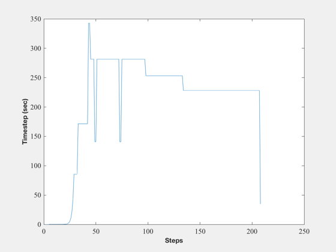
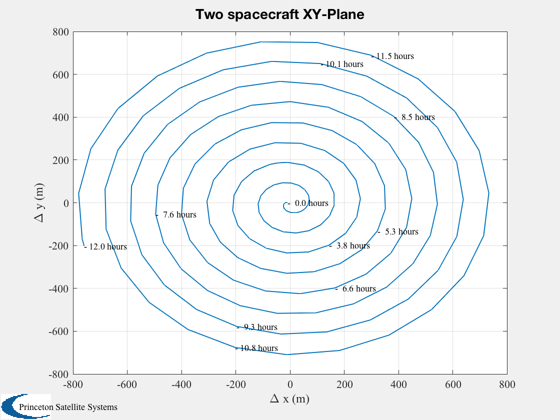

Demonstrate a 2 satellite CubeSat constellation
Uses ode113 and FOrbitMultiSpacecraft. This simulation just has the central force model. All other models (drag, radiation pressure, thrusters) are off by being empty.
---------------------------------------------------------------------- See also LabelLine, NewFig, Plot2D, TimeLabl, XLabelS, YLabelS, Date2JD, FOrbitMultiSpacecraft, TwoSpacecraftOrbitSimulation ----------------------------------------------------------------------
Contents
%------------------------------------------------------------------------ % Copyright (c) 2009 Princeton Satellite Systems, Inc. % All rights reserved. %------------------------------------------------------------------------ % Since version 8. %------------------------------------------------------------------------ d = FOrbitMultiSpacecraft;
Time and date
%--------------------
days = 0.5;
tEnd = days*86400;
d.jD0 = Date2JD([2012 4 5 0 0 0]);
Initial state vector
%--------------------- x1 = 6500; x2 = 6500.010; vY1 = VOrbit(x1); vY2 = VOrbit(x2); % State is [position;velocity;mass] % CubeSats are 1 kg %--------------------------------- r1 = [x1;0;0]; r2 = [x2;0;0]; v1 = [0;vY1;0]; v2 = [0;vY2;0]; m0 = 1; x0 = [r1;v1;1;r2;v2;m0]; d(2) = d;
ode 113 parameters
%------------------- opt = odeset( 'AbsTol', 1e-7, 'RelTol', 1e-4 );
Numerically integrate the orbit
%--------------------------------
[t,x] = ode113( @FOrbitMultiSpacecraft, [0 tEnd], x0, opt, d );
Flip the matrices for plotting
%-------------------------------
delT = diff(t);
[t,tL] = TimeLabl( t');
x = x';
Plot the xy-plane
%------------------ dX = x([1;2],:) - x([8:9],:); NewFig('Simulation Timestep') plot(delT); YLabelS('Timestep (sec)') XLabelS('Steps') Plot2D( dX(1,:)*1000, dX(2,:)*1000, '\Delta x (m)', '\Delta y (m)',... 'Two spacecraft XY-Plane' ); LabelLine( dX*1000, t, 10, ['- %4.1f ' tL(7:end-1)] ) %-------------------------------------- 